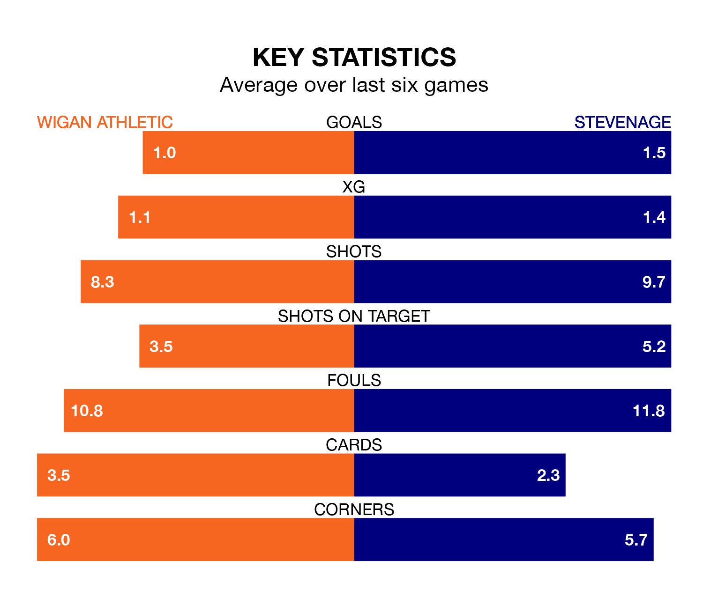

Wigan Athletic face Stevenage on Saturday seeking to protect their long unbeaten run in EFL League One.
The Latics are unbeaten in five, with three wins and two draws, ahead of the 3pm kick-off.
They face a Stevenage team who have won two and drawn one over the same number of games.
In Jamie Reid, Stevenage have one of the league's most on-form strikers so far this season. He has notched 15 goals in 25 appearances, to sit third in the scoring charts.
Wigan's top scorers, with seven goals each, are Charlie Wyke and Stephen Humphrys.
With 38 goals in 26 games so far this season, the Boro are scoring more than average in the league with 1.5 goals per game. And they are conceding fewer than average, letting in 25 goals at a rate of 1.0 per game.
Athletic are also above average scorers, with 1.4 goals per game, compared to a league average of 1.3. They have conceded 1.1 goals per game.
The visitors are seventh in the table after 26 games, of which they have won 13 and drawn seven, earning 46 points.
The Latics are two places behind Stevenage in ninth, with 12 wins and six draws putting them on 42 points.
Wigan's last match was on Tuesday, a 1-0 win against Wycombe Wanderers, with Charlie Hughes getting the goal for the Latics.
Stevenage beat Shrewsbury Town 1-0 last time out, on January 13, with Reid on the scoresheet.
Saturday's match will be refereed by Ben Toner, who has taken charge of nine EFL League One games so far this season, issuing no red cards and booking 46 players. He has not awarded any penalties.
He is yet to oversee a match featuring either Wigan or Stevenage this season.
Updated: 09:07 (UTC), 24/01/24